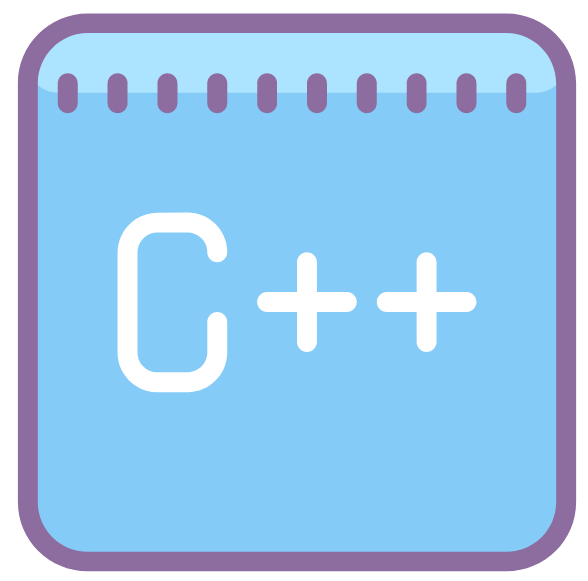

На головну сторінку


Олімпіади
1-й Інтернет-турнір "Математика.Укр"
Олімпіада "Програмування. С++"
Олімпіада "С++ для початківців"
Математика.УКР
Цей сайт-система онлайн та дистанційного навчання, розроблена та впроваджена кафедрою інформатики та вищої математики для студентів Кременчуцького національного університету імені Михайла Остроградського та усіх, хто бажає приєднатися до нас. Тут викладачі можуть створювати власні курси, а студенти проходили навчання дистанційно, отримуючи навчально-методичні матеріали до віповідних курсів. Також студенти можуть проходити тестування, отримувати консультації онлайн та інше.